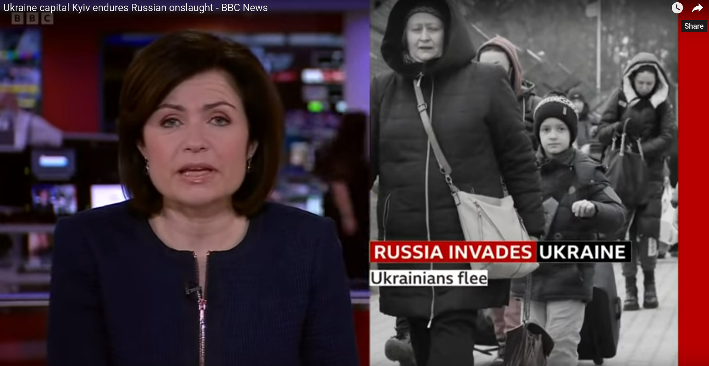

The Ukraine Conflict and the Ethics of War
Philosophy and current affairs
If you like reading about philosophy, here's a free, weekly newsletter with articles just like this one: Send it to me!
Are there any ethical rules for wars?
One might think that perhaps wars don’t really obey any rules. Since the expected behaviour in a war is that people shoot with the intention to kill each other, what rules could there be that they would be likely to obey?
But it turns out that we do distinguish between good (relatively speaking) and bad behaviour, even in war situations. Killing an armed enemy soldier in order to save one’s own life will not be as bad, morally speaking, as bombing a school full of children or a hospital. Killing a soldier in war might not generally be seen as equally bad as murdering someone at peacetime, but there are also behaviours that we would recognise as “war crimes,” that is, behaviour that even in the context of war should be considered a crime. So how do we know which behaviours are relatively better or worse in a war situation?

One crucial question is: do we believe that wars are really totally different from everyday life, so that killing in a war obeys radically different rules than killing in peace? Or do we see a war just as one more kind of human behaviour (like, say, working or mating)? If this is the case, then we would try to argue that, in principle, the same kinds of moral rules should apply to wars that also apply to everyday life at peacetime.
The laws of war
The ethical problems of wars can be divided into three groups (see [1] for a good overview and more details):
-
Declaring and entering war. This is often called the jus ad bellum part of war ethics: the law towards war. Here, we would ask questions like:
- What are good reasons to go to war?
- Are there better and worse reasons?
- Are some wars easier to justify than others?
-
The law during war (jus in bello) is about the behaviour of the warring parties while the war is taking place. Here, issues include:
- Is it ever permissible to target civilians?
- What if underage children take part in the war as armed soldiers? Should they have a special status and must the enemy avoid harming them?
- Which kinds of infrastructure is it okay to target? (Weapons factories or hospitals?)
- How to treat the wounded and the prisoners of war?
-
The rules after the war (jus post bellum) deal with questions like:
- How to end a war?
- How should the losing party be treated?
- How to rebuild the warring countries and their relations after the end of the war?
- How to deal with the return of prisoners and the wounded?
- How should the aggressor compensate the other parties for the damages inflicted during the war?

Screenshot from a BBC Youtube news video.
The six conditions for a just war
A “just” war (if we assume, for the moment, that such a thing even exists) is generally thought to fulfil six criteria:
- A just cause.
- Right intentions.
- Reasonable chances to succeed.
- Benefits proportional to losses.
- War must be the last resort.
- War can only be declared by a legitimate authority.
Let’s take the recent attack Russia’s on Ukraine as an example for the thoughts that one might have during the first stage, the jus ad bellum (the law of entering the war).
1. Just cause
It must have a just cause. There must be a good reason to go to war, and this means that the reason cannot only be greed or the wish of the one party to eliminate the other. There must be some kind of moral justification for the war, some attempt to use the war in order to prevent a worse outcome.
2. Right intentions
The party that enters the war must have the right intentions. This means that they must be honest that they enter the war only because of the just cause (see above). They should not use the cause as an excuse to start a war that really is motivated by other causes. Unfortunately, bad intentions are all too common in wars. Often, the warring parties will fabricate some excuse to go to war, but the actual reason will be something entirely different.
3. Reasonable chances to succeed
The war must have reasonable chances to be successful and to achieve its aims. It would be immoral to drag two (or more) countries into a war, if it is already foreseeable that a country is going to lose that war.
4. Benefits proportional to losses
The expected benefits must be somehow proportional to the expected losses due to the war. One wouldn’t start a war that is expected to lead to thousands of deaths just in order to take revenge for an insult uttered by the other country’s president, for example. Of course, this (and the other criteria) can all be disputed. Especially the idea of proportionality is easy to question: What benefit could possibly outweigh thousands of human deaths? Even to ask this question seems to show that the questioner has a wrong, too low idea about the value of human lives. If human lives are, as we would perhaps want to maintain, almost infinitely valuable, then we can not use them as “means” (as Kant would say) to any “end” that the war might achieve.

Explore philosophy through its most famous quotes! Today: Immanuel Kant on how to treat human beings.
5. War must be a last resort
The requirement of last resort emphasises that war, being the source of a great amount of suffering for innocent populations, should not be entered lightly. It must be the last possible way to achieve the just cause. If there is any other way, no matter how costly or inconvenient, that should be attempted first.
6. War can only be declared by a legitimate authority
And finally, the war should be decided upon by a legitimate authority: a head of state, a government or an administration that legitimately holds the power to declare this war and to ask its citizens to sacrifice their lives for the just cause. This requirement, too, can be questioned: Does any government, even a democratically elected one, have the right to order me to be killed in a war? Would such an order not be directly opposed to what is the whole point of having a state in the first place, which is to protect the interests of its citizens? And what if this is a war of liberation, where the people who are pursuing the just cause (their freedom from oppression) do not in advance have a suitable, legitimate, official authority to declare the war? If this criterion were always observed, there could never be just wars that are not started by already existing, stable, democratically legitimised states. But this is obviously not realistic.
Your ad-blocker ate the form? Just click here to subscribe!
Is Russia’s war in Ukraine a just war?
Now let’s briefly look at the present war in Ukraine. Is it a just war in terms of the jus ad bellum?
First, Putin passes the legitimate authority test. He and the Russian government are internationally recognised, legitimate authorities with the power to declare a war.
Second, the just cause test. Although one might initially think that Russia lacks a just cause, on a closer look perhaps we might say that it has a legitimate interest to preserve its own safety and to safeguard its own territorial integrity. With NATO constantly expanding East since the end of the Soviet Union, it is understandable that Russia might feel threatened. Not only has Poland been in the NATO (a US-led military alliance) for over 20 years, but Ukraine itself had begun negotiations to be accepted. This would clearly threaten Russia’s interests and long-term safety. So we might assume that Russia could have a just cause in wanting to keep NATO off its borders.
Third, right intention. This is more difficult to answer, especially since it is in principle impossible to know other people’s intentions. But we have some hints. Does President Putin likely enter this war with the sole intention to protect Russia’s interests against an attack from NATO states? It seems questionable.
-
Even with NATO states approaching from the West, it is not obvious that there was an actual threat to Russia that would justify starting a war. I am not a political analyst, but from my limited knowledge of world affairs, it doesn’t seem like the Western world has recently shown any signs of aggression against Russia. Quite the opposite. The West has been very relaxed about Putin’s rule in the past, the Novichok poisonings, the imprisonment of Alexei Navalny, Russia’s role in Syria, the invasion of Georgia, and many other instances where it could have reacted in much stronger ways. Would not cooperation with Russia, rather than a war, have been in the interest of all parties, including NATO?
-
If we look at Putin’s own life: he is an ex-KGB officer who ruthlessly has removed all possible rivals from positions of power for years, he is accused of widespread corruption, disregard for the rule of law and has repeatedly presented his nostalgic views of the Soviet Empire. All these make it plausible to question whether there might be other motives behind the attack on Ukraine than just the objective security needs of his country.
-
It might be that the aim of restoring Russia’s security and blocking further NATO memberships of countries bordering the country could be better achieved by other means, like economic pressure or the threat of cutting off gas supplies to Europe. Would the prospect of being attacked by Russia not increase the willingness of bordering countries to seek the protection of NATO? Would it not likely achieve the opposite of the stated goal?
Considering such points, it does not seem plausible that Russia’s intention in attacking Ukraine was only to guarantee its own safety. There seem to be other goals behind the attack: the wish to restore the historical power and unity of the Soviet Union perhaps, or Putin’s desire to expand his personal power and to secure a world-changing legacy of his reign.
Let me say again that this is an example for how to apply the philosophical principles of Just War Theory to a particular situation. It is not a political analysis. If you disagree with my points and conclusions, you are welcome to provide your own. You are even more welcome to do it right here, in the comments section below. I don’t claim to have any superior knowledge of this particular conflict or its political background.
If you like reading about philosophy, here's a free, weekly newsletter with articles just like this one: Send it to me!
Fourth, there also don’t seem to be many reasonable chances to succeed for Russia in this war. Yes, a purely military victory is likely, but politically it will be difficult to avoid negative long-term effects on Russia’s interests. This poses the question what would actually count as a “success” for Russia? Is it only achieving a particular military goal, e.g. controlling Kyiv? Or is it to enter a long-term state of safety and prosperity for the country?
Fifth, are the benefits proportional to the losses? What is the actual, measurable benefit to Russia of this attack? And could that effect not have been achieved much easier and more sustainably by improving relations with all neighbouring countries and the West, instead of starting a new war? This question always also has a cynical ring to it, because what we are asked to do is weigh human lives against other goals and perceived “benefits.” Can any benefits ever be “proportional” or “more important” than the intentional destruction of human lives? This is the point where radical pacifists would disagree with Just War Theory.
Last, if we believe that Russia’s long-term goals could be better served by being cooperative and non-threatening, then war would not be a last resort. If we assume that Russia has many other ways of achieving its geopolitical goals without needing to start a war, then this criterion is not fulfilled and we should conclude that this war is not just.
To summarise, according to what are generally taken to be the criteria for just wars, Russia’s attack on Ukraine seems to fail 4 of the 6 requirements. It would therefore seem to not be a just war. The international community is probably right to oppose Russia’s aggression. Of course, as always, one might disagree. The criteria themselves can be questioned and also my own evaluation of the political and historical background may be wrong.
We could only cover a small part of the ethics of war in this article. We did not talk about the jus in bello or whether other countries are obliged to come to Ukraine’s assistance. We will cover these other questions in the second part of this article on the philosophy of war and armed conflict!

What are the laws that apply during a war? We discuss the jus in bello and the requirements of discrimination, proportionality and necessity. Just War Theory applied to the current conflict in the Ukraine.
Sources
[1] Lazar, Seth, “War”, The Stanford Encyclopedia of Philosophy (Spring 2020 Edition), Edward N. Zalta (ed.), available online.
If you like reading about philosophy, here's a free, weekly newsletter with articles just like this one: Send it to me!
Thanks for reading! If you enjoyed this article, please share it and subscribe! The cover image is a screenshot from a BBC news Youtube video.